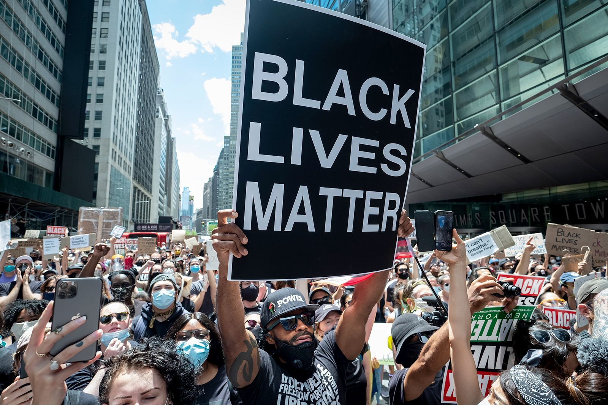
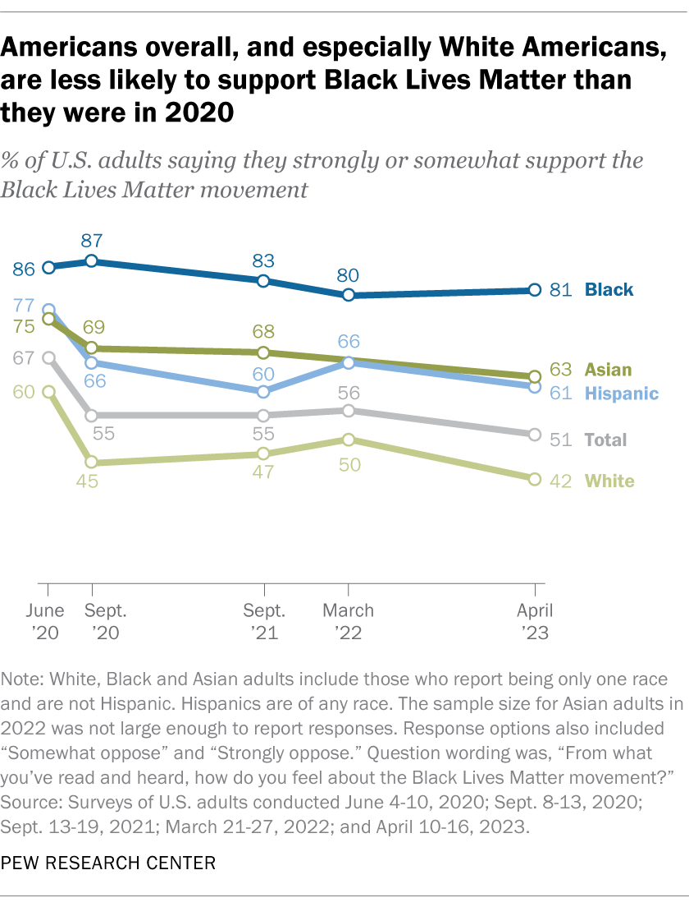
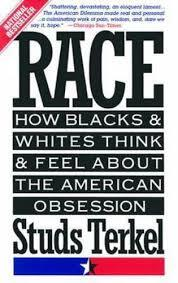
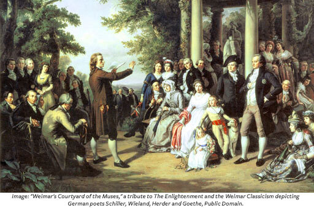
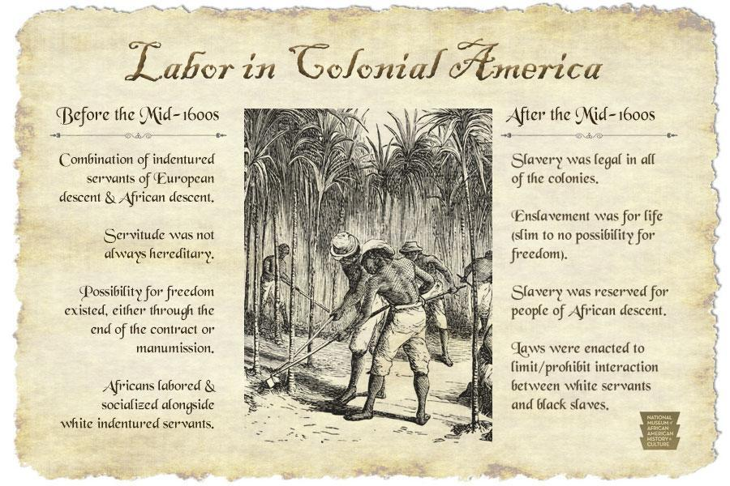

Which of the following best defines racism?
1.Racism is when a person is treated worse, excluded, disadvantaged, harassed, bullied, humiliated or degraded because of their race or ethnicity.
is discrimination and prejudice against people based on their race or ethnicity. Racism can be present in social actions, practices, or political systems (e.g. apartheid) that support the expression of prejudice or aversion in discriminatory practices. The ideology underlying racist practices often assumes that humans can be subdivided into distinct groups that are different in their social behavior and innate capacities and that can be ranked as inferior or superior. Racist ideology can become manifest in many aspects of social life.
was at the heart of North American slavery and the colonization and empire-building activities of western Europeans, especially in the 18th century. The idea of race was invented to magnify the differences between people of European origin and those of African descent whose ancestors had been involuntarily enslaved and transported to the Americas. By characterizing Africans and their African American descendants as lesser human beings, the proponents of slavery attempted to justify and maintain the system of exploitation while portraying the United States as a bastion and champion of human freedom, with human rights, democratic institutions, unlimited opportunities, and equality.
is the definition of racism in the American Heritage Dictionary?
belief that race accounts for differences in human character or ability and that a particular race is superior to others.
Discrimination or prejudice based on race.
Racism can also be said to describe a condition in society in which a dominant racial group benefits from the oppression of others, whether that group wants such benefits or not.
also the “systemic oppression” of a racial group, giving other groups a social, economic, and political advantage.
Both definitions matter in this article, which addresses ten root causes of racism (specifically against Black people) on a systemic and individual level.
A desire to “keep the peace”
often persists because “keeping the peace” or maintaining law and order is more important than change. In his book Stamped from the Beginning, Ibram X. Kendi writes that racist ideas in America have long suppressed resistance to racial inequalities. When people believe racist things like that Black people are naturally more violent and dangerous they arent disturbed by police brutality or mass incarceration.
In relation to racism, color blindness is the disregard of racial characteristics in social interaction, for example in the rejection of affirmative action, as a way to address the results of past patterns of discrimination. Critics of this attitude argue that by refusing to attend to racial disparities, racial color blindness in fact unconsciously perpetuates the patterns that produce racial inequality.
Centuries of European colonialism in the Americas, Africa and Asia were often justified by white supremacist attitudes. During the early 20th century, the phrase "The White Man's Burden" was widely used to justify an imperialist policy as a noble enterprise. A justification for the policy of conquest and subjugation of Native Americans emanated from the stereotyped perceptions of the indigenous people as "merciless Indian savages", as they are described in the United States Declaration of Independence.
Black Lives Matter is a decentralized political and social movement that seeks to highlight racism, discrimination, and racial inequality experienced by black people and to promote anti-racism. Its primary concerns are police brutality and racially motivated violence against black people.
The loose structure of Black Lives Matter has contributed to confusion in the press and among activists, as actions or statements from chapters or individuals are sometimes attributed to "Black Lives Matter" as a whole. Matt Pearce, writing for the Los Angeles Times, commented that "the words could be serving as a political rallying cry or referring to the activist organization. Or it could be the fuzzily applied label used to describe a wide range of protests and conversations focused on racial inequality."
The decline is largely due to a smaller share of White adults supporting the movement. In June 2020, 60% of White adults said they supported Black Lives Matter, but that share fell to 50% in 2022 and 42% this year. Support among Asian and Hispanic adults has also fallen since 2020, but not as sharply as it has among White adults. In contrast, about 80% or more of Black adults have expressed support for the movement every year since 2020.
THE INVENTION OF RACE:
The concept of “race,” as we understand it today, evolved alongside the formation of the United States and was deeply connected with the evolution of two other terms, “white” and “slave.” The words “race,” “white,” and “slave” were all used by Europeans in the 1500s, and they brought these words with them to North America. However, the words did not have the meanings that they have today. Instead, the needs of the developing American society would transform those words meanings into new ideas.
The term “race,” used infrequently before the 1500s, was used to identify groups of people with a kinship or group connection. The modern-day use of the term “race” (identifying groups of people by physical traits, appearance, or characteristics) is a human invention. During the 17th century, European Enlightenment philosophers based their ideas on the importance of secular reasoning, rationality, and scientific study, as opposed to faith-based religious understandings of the world. Philosophers and naturalists were categorizing the world anew and extending such thinking to the people of the world. These new beliefs, which evolved starting in the late 17th century and flourished through the late 18th century, argued that there were natural laws that governed the world and human beings. Over centuries, the false notion that “white” people were inherently smarter, more capable, and more human than nonwhite people became accepted worldwide. This categorization of people became a justification for European colonization and subsequent enslavement of people from Africa.
European colonists’ use of the word “white” to refer to people who looked like themselves, grew to become entangled with the word “race” and “slave” in the American colonies in the mid-1660s. These elites created “races” of “savage” Indians, “subhuman” Africans, and “white” men. The social inventions succeeded in uniting the white colonists, dispossessing and marginalizing native people, and permanently enslaving most African-descended people for generations. Tragically, American culture, from the very beginning, developed around the ideas of race and racism.
Slavery, as a concept has existed for centuries. Enslaved people, “slaves,” were forced to labor for another. We can point to the use of the term slave in the Hebrew Bible, ancient societies such as Greece, Rome, and Egypt, as well as during other eras of time. Within the Mediterranean and European regions, before the 16th century, enslavement was acceptable for persons considered heathens or outside of the Christian-based faiths. In this world, being a slave was not for life or hereditary - meaning the status of a slave did not automatically transfer from parent to child. In many cultures, slaves were still able to earn small wages, gather with others, marry, and potentially buy their freedom. Similarly, peoples of darker skin, such as people from the African continent, were not automatically enslaved or considered slaves.
By the late 1600s, significant shifts began to happen in the colonies. As the survival of European immigrants increased, there were more demands for land and the labor needed to procure wealth. Indentured servitude lost its attractiveness as it became economically less profitable to utilize servants of European descent. White settlers began to turn to slavery as the primary source of forced labor in many of the colonies. African people were seen as more desirable slaves because they brought advanced farming skills, carpentry, and bricklaying skills, as well as metal and leatherworking skills. Characterizations of Africans in the early period of colonial America were mostly positive, and the colonists saw their future as dependent on this source of labor.
The trajectory of Virginias development of chattel slavery highlights how the system of chattel slavery and, along with it, anti-blackness (opposed to or hostile toward black people), was codified in colonial America. Labor status was not permanent nor solely connected to race. A significant turning point came in 1662 when Virginia enacted a law of hereditary slavery, which meant the status of the mother determined the status of the child. This law deviated from English common law, which assigned the legal status of children based on their fathers legal status. Thus, children of enslaved women would automatically share the legal status of “slave.” This doctrine, partus sequitur ventrem (see below), laid the foundation for the natural increase of the enslaved in the Americas and legitimized the exploitation of female slaves by white planters or other men. In 1667, the last of the religious conditions that placed limits on servitude was erased by another Virginia law. This new law deemed it legal to keep enslaved people in bondage even if they converted to Christianity. With this decree, the justification for black servitude changed from a religious status to a designation based on race. See more information about the timeline of “Slavery in the Making of America.”
The successful American Revolution and the new Constitution resulted in fierce debates about the future of slavery and the meaning of freedom. However, the nation did not end slavery nor the uses of racial ideology to separate groups, choosing to maintain the existing hierarchy. The U.S. outlawed the transatlantic slave trade in 1808, but the institution of slavery and its connection to African descendants remained. Boosted by the Louisiana Purchase, cotton agriculture (made profitable by the invention of the cotton gin), and seized American Indian lands, a new internal slave trade reinvigorated slavery, justified by 19th-century pseudo-scientific racist ideas.